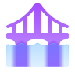

monitordeenchentes.comVisualize em tempo real as medidas e variações do nível do rio atráves dos nossos sensores
Nível do Rio - Monitoramento
Status Atual: Aguardando sensor...
Sobre o projeto
Com o uso do sensor ultrassônicos HC-SR04, é possível medir a distância do rio em milímetro.
O totem física indica visualmente o perigo para a população local atráves de alertas luminosos.